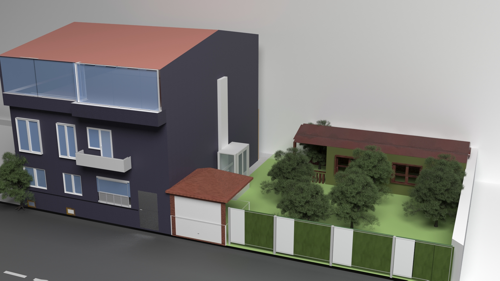

My Story
Benim adım Furkan Güneri. 1999 yılında Amasya'da doğdum. İlk, orta ve lise eğitimimi Samsun'da tamamladım. 2017 yılında Giresun'da Giresun Üniversitesi'ne Enerji Sistem Mühendisliği öğrencisi olarak başladım. Ayrıca geçen ay mezun oldum. Fakülteyi ve bölümü çok seviyorum.Mesleğime duyduğum hayranlıktan dolayı her zaman kendimi geliştirmek ve yeniliklere katkıda bulunmak istiyorum. Enerji, makine ve elektrik alanındaki lisans eğitimimin yanı sıra otomasyon, bakım-onarım ve proje değerlendirme konularında yaptığım staj ve projelerle kendimi geliştirdiğime inanıyorum.Esnekliğim, girişimciliğim, sorumluluğum, yüksek iletişim becerilerim ve önceki gezilerden kazandığım farklı kültürlere uyum sağlama yeteneğim ile ekip çalışmasına kolayca uyum sağlayabilirim. Bugün edindiğimiz bilgilerin sadece mezun olduğumuz okullardan alınmaması, bilgi ve becerilerimize eklenmesi gerektiğine inanıyorum. Ayrıca meslek hayatımda öğrendiklerimi size ve ülkemize menfaat sağlayarak sayenizde yeni projelere imza atmak istiyorum. Bu konuyu göz önünde bulundurarak özgeçmişim, deneyimlerim ve becerilerim hakkında ek bilgiler içermektedir.
Vakit ayırdığınız ve ilginiz için çok teşekkür ederim.
Bilgisayar Becerilerim
✓ Microsoft Office
✓ Photoshop CS6
✓ 3ds Max
✓ KeyShot
✓ DaVinci Resolve
✓ Adobe After Effects
✓ Fusion 360
✓ Adobe İllustrator
Projelerim

✓ Teknofest Yarışması Uçan Araba Projesi- 2020
✓ Rüzgar Türbini ile balık çiftliklerine enerji verimi projesi- 2019
✓ Cd ile Zener Diyot Kaynaklı Güneş Paneli- 2018
Sertifikalar

✓İngilizce A1-B2 Dil Eğitimi Sertifikası
✓Kalite Mühendisi Yetiştirme Programı
✓PLC Ve DLC Otomasyon Sistemler Eğitimi
✓AutoCad Eğitim Sertifikası
Projelerim

Bilgisayar Becerilerim
3 yıldır freelance olarak 3Ds max ve Photoshop programlarını aktif şekilde kullanıyorum. Bunun yanısıra After Effects, Fusion 360 ve Davinci Resolve gibi programlara da hakimim. Kısacası bilgisayarda çoğu program hakkında bilgi sahibiyim. Portfölyomu incelemek için aşağıdaki linke tıklayabilirsiniz.
Portfölyomu incelemek için tıklayabilirsiniz3D Model
Üstteki projem 'Egg House' olarak adlandırdığım minyatür bir yaşam alanı projesi. Sol taraftaki karavan ise 'DoubleVan' olarak adlandırdığım kamp alanlarında iki katı hacime kadar genişleyebilen çekme karavan projem.
Daha fazla proje için tıkla !
Mimari Ev Modelleme
3Ds Max ve Sketchup programlarını kullandığım mimari ev modelim. Projede bir garaj, bir dış asansör,bir bahçe alanı ve bir müştemilat bulunuyor.
İlginiz için teşekkür ederim
Kendini her zaman geliştirmeye adamış. Bir şeyler öğrenilmeyen vaktin hayatından çalınan zaman olduğuna inanan, insanlara öğretmeyi ve onlardan öğrenmeyi kendine ders edinmiş naçizane çiçeği burnunda bir enerji sistemleri mühendisiyim.